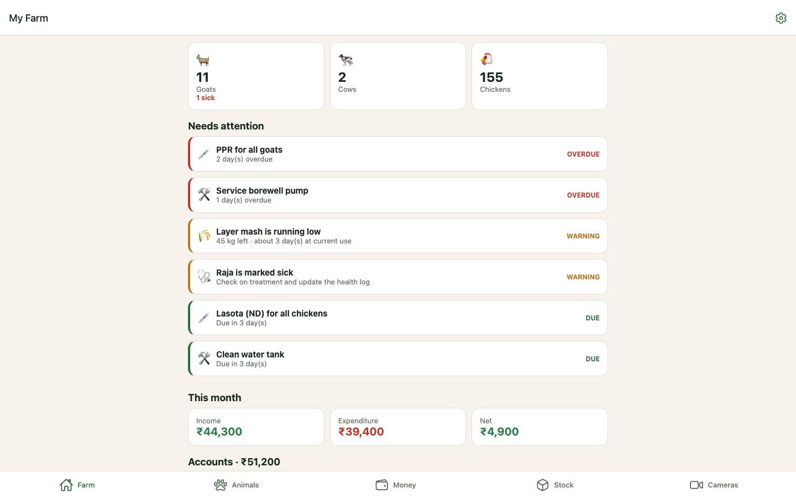
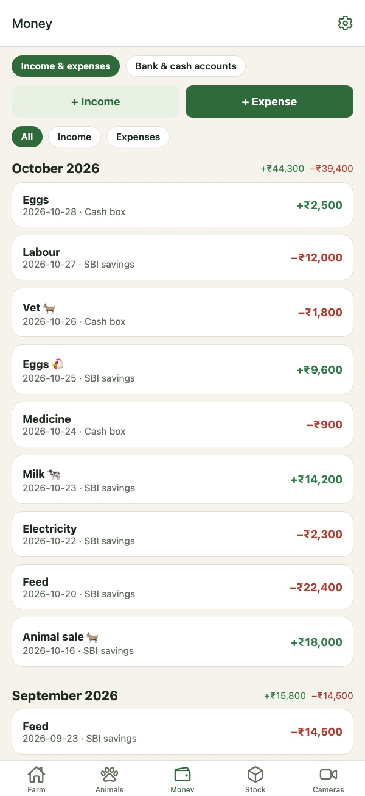
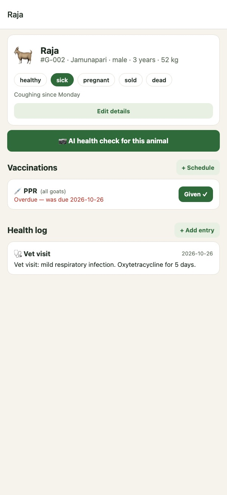

Farm Manager: running a small livestock farm from one phone
A goat, cow and chicken farm management app for iPhone, Android and the web. It keeps the herd, the money, the feed store and the sheds in one place, checks a sick-looking animal from a photo, and reminds the farmer before something goes wrong.
- RoleProduct design and full-stack build
- PlatformsiOS, Android and web from one codebase
- StackExpo / React Native, Node, Zoho Catalyst, Claude vision
- Built withAI-assisted coding (Claude Code)


A small mixed farm runs on memory, a notebook and bank SMS
A family farm with a dozen goats, a couple of cows and a laying flock has the same jobs as a large one, without anyone whose job is to track them. The costly mistakes are rarely dramatic. They are dates and levels nobody was watching.
💉 A missed vaccination
PPR for goats or Newcastle disease for chickens is due on a date written somewhere. Miss it, and one sick animal can take the flock.
🌾 Feed runs out on a Sunday
Nobody notices the layer mash is low until the last bag is open, and the supplier is closed.
🏦 The balance drops quietly
Feed, vet and labour go out of one account while milk and egg money comes into another. The low point arrives before anyone adds it up.
What the app had to get right
- Tell me what needs doing today before showing anything else.
- Fit how the farm is actually counted: a cow has a name, 120 layers are one flock.
- Work on whatever is at hand: a budget Android phone in the shed, an iPhone, or a laptop browser.
- Plain words and recognisable icons over charts and jargon.
- Be honest about AI: a photo can raise a concern, it cannot diagnose.
How the design answered those goals
The dashboard is a to-do list, not a report
The first screen counts the animals, then lists everything that needs attention, ranked OverdueWarningDue. Vaccinations, feed, balances, maintenance and sick animals all land in the same list in the same shape, and each one opens the screen where it gets fixed.
One record for a goat, one for a flock
An animal record carries a head count. A named cow is a count of one; a layer flock is one record with 120 head. Totals on the dashboard add the counts, so the numbers are right without asking a farmer to enter 120 chickens.
Money follows the farm, not the bank
Every transaction has a category (feed, vet, milk sale, egg sale) and an account. Each account has its own minimum, so a cash box can warn at ₹2,000 and the bank at ₹15,000.


Feed is shown in days, not kilograms
"45 kg" means nothing until you know the flock eats 14 kg a day. Each stock item can carry its daily use, so the app shows about 3 days left and starts warning five days before it runs out. Two buttons, Used and Restocked, keep the number current without opening a form.
Reminders live on the phone
Every time the dashboard loads, the app rebuilds its notification schedule from the same reminder list: an 8 am alert on each vaccination or maintenance due date, and a next-morning digest of anything urgent. These are local notifications, so they need no push server and fire without a signal.
One form for eight kinds of record
Animals, health entries, vaccinations, transactions, accounts, stock, maintenance and cameras are all described as field lists. One form screen renders any of them with large tap targets: choices are chips, linked records (which animal, which account) are chips too, and dates have a Today shortcut.
An AI health check that knows its limits · Claude vision
The farmer photographs an animal and can add a note like "not eating since yesterday". The server sends the photo to Claude with instructions written for small Indian farms, and gets back a fixed structure: what is visible, how worried to be, possible conditions, practical next steps, and whether to call a vet.
Uncertainty is part of the answer
A blurry photo or no animal in frame comes back as low confidence, not a guess. Signs of contagious disease such as foot-and-mouth, PPR, lumpy skin or Newcastle disease always escalate to call a vet. Every result says it is a screening, not a diagnosis. A worrying result is saved to the animal's health log and marks it sick, so it appears on tomorrow's dashboard.
CCTV that a phone can actually play
Farm cameras usually speak RTSP, which no browser or phone WebView can play. The app supports what they can (HLS, MJPEG and JPEG snapshots) and says plainly when a gateway such as go2rtc is needed. A snapshot camera can be sent for the same AI check.

One codebase, one server, one URL
The app is written once in Expo and React Native and builds for iOS, Android and the browser. The server is a small Node API that also serves the web build, so the hosted address is both the web app and what the phone apps connect to.
The reminder rules are plain functions of the records and a date, covered by unit tests, so the dashboard and the phone notifications always come from the same logic.
Where it stands
Working end to end in the browser against a real API with sample farm data: the dashboard, livestock, money, stock, maintenance, vaccinations, forms and the HLS camera player. The screens on this page are captured from that build.
Not yet done: running the native builds on a physical iPhone and Android phone, a live AI result (it needs an API key on the server), and deploying to Catalyst. I'll add those screens here once they're real rather than mock them up.
Design the warnings first
The features were easy to list: livestock, money, stock, cameras, AI. The design work was deciding that the product is mostly about when to speak up. Every feature feeds one list of things that need doing, ranked by how late they are, and the rest of the app exists to make that list accurate.